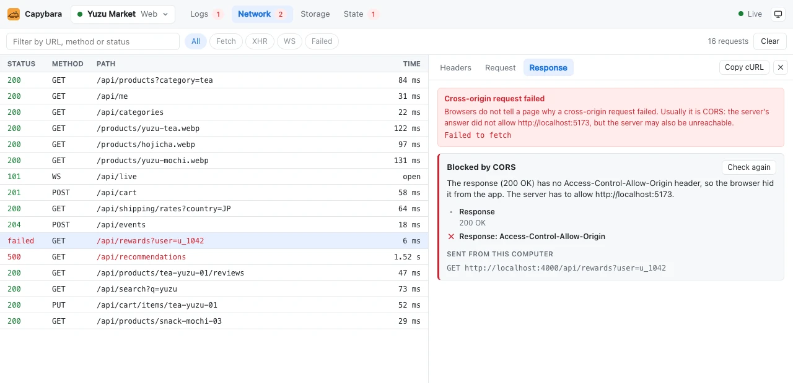

Find out why a request failed
Browsers only tell your app “Failed to fetch”. Capybara repeats the request's CORS steps from your computer and
names the cause: a missing Access-Control-Allow-Origin, a failing preflight, a blocked port.
